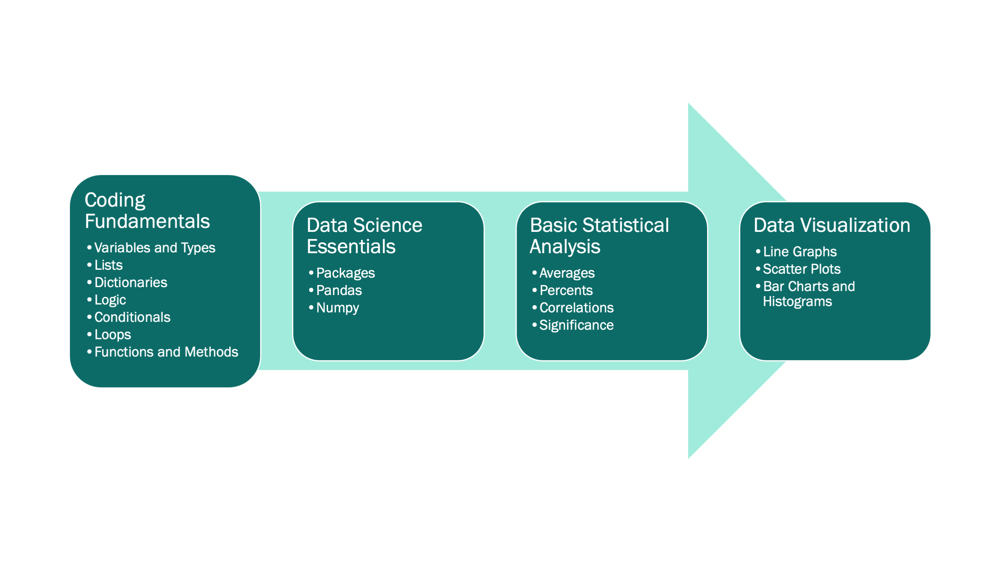
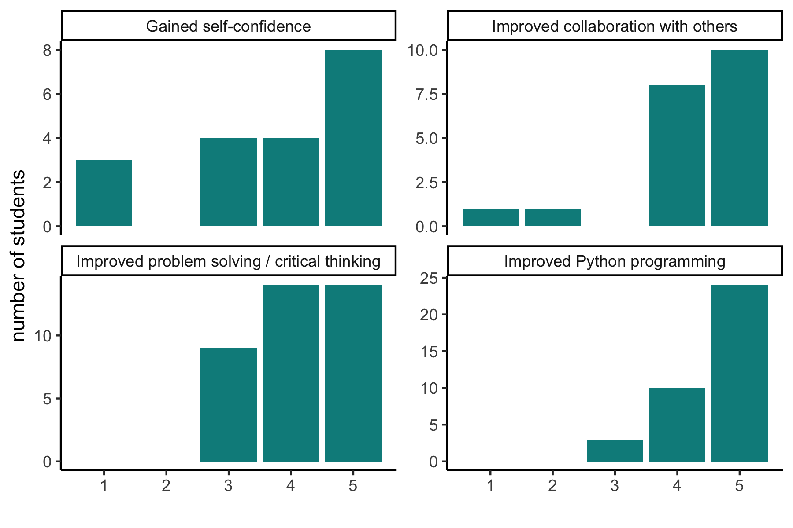
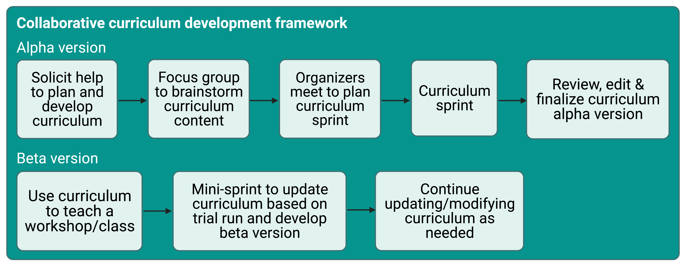
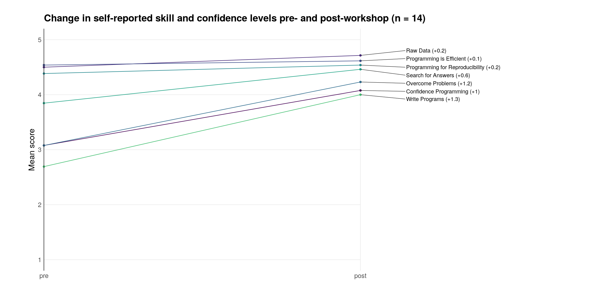

3.1 Preamble
TODO introduce 3 papers and explain how they tie together
3.2 Teaching Python for Data Science: Collaborative development of a modular and interactive curriculum
Co-authors of the Girls Who Code paper include: Marlena Duda*, Kelly L. Sovacool*, Negar Farzaneh, Vy Kim Nguyen, Sarah E. Haynes, Hayley Falk, Katherine L. Furman, Logan A. Walker, Rucheng Diao, Morgan Oneka, Audrey C. Drotos, Alana Woloshin, Gabrielle A. Dotson, April Kriebel, Lucy Meng, Stephanie N. Thiede, Zena Lapp, and Brooke N. Wolford.
*Indicates co-first author
3.2.1 Summary
We are bioinformatics trainees at the University of Michigan who started a local chapter of Girls Who Code to provide a fun and supportive environment for high school women to learn the power of coding. Our goal was to cover basic coding topics and data science concepts through live coding and hands-on practice. However, we could not find a resource that exactly met our needs. Therefore, over the past three years, we have developed a curriculum and instructional format using Jupyter notebooks to effectively teach introductory Python for data science. This method, inspired by The Carpentries organization, uses bite-sized lessons followed by independent practice time to reinforce coding concepts, and culminates in a data science capstone project using real-world data. We believe our open curriculum is a valuable resource to the wider education community and hope that educators will use and improve our lessons, practice problems, and teaching best practices. Anyone can contribute to our Open Educational Resources on GitHub.
3.2.2 Statement of Need
As women bioinformatics trainees at the University of Michigan (U-M), we experience the gender gap in our field first-hand. During the 1974-1975 academic year, women achieved 18.9% of total Bachelor’s degrees in computer and information sciences in the US (National Center for Education Statistics 2012). By 1983-1984 this peaked at 37.1%, but fell to 17.6% by 2010-2011. We also see this national trend in the training of the next generation of Bioinformaticians at Michigan Medicine. Since accepting its first students in 2001, the U-M Bioinformatics Graduate Program has graduated 66 male and 22 female doctorates as of 2019. This disparity begins at the applicant level; during 2016-2019 the average percentage of females applying directly to the Bioinformatics PhD program was 35.2%, and the average percentage of female applicants listing Bioinformatics as first or second choice in the Program in Biomedical Sciences, U-M’s biomedical PhD umbrella program was 41%.
Previous research on women’s educational experiences in science, technology, engineering, and mathematics (STEM) have produced various explanations for persistent gender disparities (Benbow and Vivyan 2016). One explanation is that women often experience stereotype threats that negatively influence their math and science performance and deter them from pursuing STEM as a career (Hill, Corbett, and St. Rose 2010). The majority of our organization’s founding graduate students (all women) began coding in our undergraduate careers or later. We wanted to provide a safe environment for local high school women to develop confidence in themselves and their computational skills before college, and be exposed to successful women role models in STEM to counter negative stereotypes.
Girls Who Code, a national organization whose mission is to close the gender gap in technology (Saujani 2015), was founded in 2012. Because of our personal experiences and the paucity of women in our field (National Center for Education Statistics 2012; Bonham and Stefan 2017), we began a Girls Who Code student organization at the University of Michigan in 2017. For the past four academic years we have registered annually as a recognized Girls Who Code Club because the national organization provides name recognition, curriculum resources, guidance for a Capstone Impact Project, and a framework for launching a coding club. Participants in the Club attend weekly meetings at the University of Michigan (when the club is run in person rather than virtually), and are thus largely high school women from the Ann Arbor area. In 2019 we launched our own summer program, the Data Science Summer Experience. When held in person, the Summer Experience is hosted in Detroit to provide the opportunity for high school women outside of Ann Arbor to learn coding skills in an inclusive environment.
The national Girls Who Code organization provides a curriculum that teaches website and application development through programming languages like HTML and Java; however, our biomedical science graduate students generally have limited experience with these languages and with web development. In contrast, many of us have extensive experience performing data science using the Python programming language. Data Scientist was rated the #1 job in America by Glassdoor in 2016-2019, #3 in 2020, and #2 in 2021 (Stansell 2019). Furthermore, Python is the most popular programming language according to the PYPL PopularitY of Programming Language Index (“PYPL PopularitY of Programming Language Index,” n.d.). Therefore, we believe career exploration in data science using the Python programming language will optimally prepare our learners for careers that provide financial stability and upward economic mobility. By leveraging the data science expertise of our Club facilitators (hereafter termed instructors), we created a specialized curriculum focused on computational data science in the Python programming language.
Girls Who Code encourages participants to learn programming skills while working on an Impact Project website or application throughout the Club (Girls Who Code HQ 2021). We created an open source Data Science curriculum that teaches the requisite Python and statistics skills to complete a Capstone Project, where learners explore, analyze, and present a data set of their choosing. Using this curriculum, we employ participatory live coding, where learners type and run code along with the instructor in real time. Using paired activities, our curriculum follows the “I do, we do, you do” didactic paradigm (D. Fisher and Frey 2013). We provide open source resources for both in-person and virtual versions of our curriculum, including videos corresponding to each lesson. While we developed this curriculum for our Girls Who Code Club and Summer Experience, we believe that it can be widely used for teaching introductory coding for data science.
3.2.3 Collaborative Curriculum Development
We assembled a team of volunteers involved in our club to develop a custom curriculum to teach introductory Python for data science. We chose the content based on what our learners would need to learn to complete a small data analysis project and communicate their findings to their peers. We divided the content by topic into Jupyter notebooks for each lesson, with each lesson taking approximately 15-20 minutes to teach via live coding. Every lesson has a corresponding practice notebook with additional exercises on the same content taught in the lesson, but using different data or variables. We used a similar development workflow as the U-M Carpentries curriculum (Lapp et al. 2021). Briefly, we hosted the curriculum notebooks in a public GitHub repository to facilitate collaborative development and peer review using pull requests. In the initial curriculum drafting phase, developers were assigned lesson and practice notebooks to write. Once the draft of a lesson was completed, the writer opened a pull request and asked for review from a different developer. The reviewer then provided feedback and approved the pull request to be merged into the main branch after the writer made any requested changes. This way, more than one person viewed each notebook before it could be incorporated into the public curriculum, which reduced mistakes and ensured higher quality content. While teaching from the curriculum at the first Data Science Summer Experience, instructors took notes on their experience and made revisions afterward. Maintainers continue to monitor the repository and resolve issues as they arise.
Following the onset of the COVID-19 pandemic, we quickly pivoted our club to a virtual format. In preparation for the 2020 Summer Experience, we switched to a flipped classroom style following feedback from our club participants that it was too difficult to follow along live coding via Zoom (see Instructional Design).
3.2.4 Curriculum
Our curriculum was designed for high school students with no prior coding experience who are interested in learning Python programming for data science. However, this course material would be useful for anyone interested in teaching or learning basic programming for data analysis.
3.2.4.1 Learning Objectives
The learning objectives of this curriculum are:
- Write code in Python with correct syntax and following best practices.
- Implement fundamental programming concepts when presented with a programmatic problem set.
- Apply data analysis to real world data to answer scientific questions.
- Create informative summary statistics and data visualizations in Python.
These skills provide a solid foundation for basic data analysis in Python. Participation in our program exposes learners to the many ways coding and data science can be impactful across many disciplines.
3.2.4.2 Course Content
Our curriculum design consists of 27 lessons broken up into 5 modules that cover Jupyter notebook setup, Python coding fundamentals, use of essential data science packages including pandas and numpy, basic statistical analyses, and plotting using seaborn and matplotlib (Figure 1) (Harris et al. 2020; Waskom 2021; Hunter 2007). Each lesson consists of a lesson notebook and a practice notebook containing similar exercises for the learner to complete on their own following the lesson.
r sovatools::get_image_dims(here::here('papers/girls-who-code/paper/lesson-modules.png'))
Each lesson builds on those before it, beginning with relevant content reminders from the previous lessons and ending with a concise summary of the skills presented within. As they progress through the curriculum, the learners begin simultaneously working on a data science project using a real world dataset of their choosing. While more time is dedicated to lessons early in the program, the formal curriculum tapers off until the learners are solely applying their skills to the data science project. Through this Capstone Project, learners gain practical experience with each skill as they learn it in the lessons; including importing and cleaning data, data visualization, and basic statistical analyses.
3.2.5 Instructional Design
We modeled our instructional design in the style of Software Carpentry (Wilson 2016).
- Each lesson begins with a recapping of the relevant core skills presented in the previous lessons.
- All lessons are designed to be taught via 15-minute live-coding sessions. This method is used by The Carpentries and is demonstrated to be an effective method that engages learners (Wilson 2016; Nederbragt et al. 2020) since learners must actively engage with the material and deal with errors and bugs as they arise.
- Each lesson ends with a summary of core skills presented within the material.
- Each short lesson is also accompanied by a subsequent 10-minute independent practice, providing further opportunity for practical experience implementing the coding skill at hand and testing learners’ understanding of the content.
To better facilitate virtual instruction during the COVID-19 pandemic, we switched to a flipped classroom. Prior to meeting, learners watch videos of instructors explaining the material through “live” coding and code along in the lesson notebook with while watching the video. Each video shows the Jupyter notebook alongside the instructor themselves teaching. Learners then complete a practice notebook corresponding to the lesson. During the virtual meeting time, instructors answer questions and review the core concepts in the practice exercises. This virtual format is especially beneficial because it 1) allows learners to learn at their own pace, and 2) enables dissemination of our curriculum to a wider audience interested in learning introductory Python programming for data science.
For both in-person and virtual instruction, once learners have completed the Fundamentals module and reach the Data Science Essentials module they begin simultaneous work on their data science projects. Projects are completed in a pair programming style, where partners take turns assuming the “driver” (i.e. the typer) and “navigator” (i.e. the helper) roles (Hannay et al. 2009). Switching off in this way helps both partners assume equal responsibility for the project workload, but more importantly it enables improved knowledge transfer through peer-to-peer learning. The culmination of the project is a presentation to peers, instructors, and family members. Through this process learners gain hands-on experience coding, cleaning data, performing statistical analyses, creating informative data visualizations, and communicating their results to others.
In addition to our coding curriculum, another key component of our programming is hosting women guest speakers from diverse fields across academia and industry. Our guest speakers come to discuss the journey they have taken to their career paths as well as how they utilize programming and data science in their jobs. These varied perspectives are extremely valuable to our learners as they provide several practical examples of programming careers in the real world, and expose them to successful women in STEM.
3.2.5.1 Experience of Use
We have used this curriculum to teach the Data Science Summer Experience and Girls Who Code Club in person in 2019 and virtually in 2020-2021. For both in-person and virtual instances, we had several instructors present at each session to answer questions and help learners debug. Furthermore, one or two instructors were assigned to each project group to help learners define data analysis questions, develop and execute a data analysis plan, visualize and communicate their findings, and troubleshoot coding problems. Projects have ranged from investigating exoplanets to studying the genomics of psoriasis.
We credit the success of our curriculum not only to the skill of the instructors, but also to the way we organized and executed the lessons and project:
- The instructors and learners used Google Colaboratory (Colab) to write and execute code in Jupyter notebooks. We chose this option because learners do not have to install any programs to use Google Colab and can easily open and edit the Jupyter notebooks from GitHub. When meeting in person, most learners use Google Chromebooks which have limited programming capabilities, but easy use of a web browser.
- Assigning instructors to groups allowed learners to build a more personal connection with their instructors, making them feel more comfortable asking questions.
- Group projects were performed using pair programming to allow learners to collaborate and learn from each other.
- We used the “sticky note” system from The Carpentries by which learners can ask for help by putting up a colored sticky note (or a Zoom emoji in the case of virtual meetings) (Becker 2016).
- We exposed the learners to different aspects of data science by bringing in women guest speakers from academics and industry. This allowed them to better put what they were learning into context, think about how they might use the skills they were learning in potential future careers, and exposed them to successful women in STEM.
3.2.5.1.1 Learner experiences
We surveyed learners anonymously after each Club and Summer Experience and found that most felt that their skills in Python programming, problem solving, critical thinking, and collaboration had improved (Figure 2). Furthermore, on a 10 question skills assessment during the 2019-2020 instance of the Club, the average increase in correct answers between the first meeting and the last meeting was 4.2 with a standard deviation of 2.8 (N=5 respondents). We also surveyed Club and Summer Experience alumni and found that 75% (N=20) want to pursue a STEM career. 62% (N=21) are still coding. On a 5-point scale from ‘Strongly Disagree’ to ‘Strongly Agree,’ the average answer for ‘My participation in GWC impacted my career aspirations’ is 4 (s.d.=0.9), with 4.5 (s.d.=0.6) for ‘Participating in GWC made me feel more confident in analyzing data’ and 3.9 (s.d.=1) for ‘Participating in GWC made me more confident in myself.’
r sovatools::get_image_dims(here::here('papers/girls-who-code/paper/skill_plots.png'))
Overwhelmingly, learners’ favorite parts of the program are the guest speakers and the project. These aspects of our curriculum expose them to new fields and allow them to apply their newfound coding skills to asking an interesting question. A 2021 Club learner shared, “I plan to go to college for Computer Science and get a robotics minor when my college offers it. GWC has inspired me to consider pursuing a Masters or PhD in CS as well as take some electives in Data Science.” Five of our 86 alumni have gone on to perform research with U-M faculty members, with one presenting her work at an international conference. In fact, about a third of participants claim that they are now more interested in pursuing a career in computer or data science compared to before their Girls Who Code experience.
3.2.6 Acknowledgements
We would like to acknowledge our faculty co-sponsors Maureen Sartor & Cristina Mitrea. We appreciate the continued support of U-M DCMB staff and faculty including Julia Eussen, Mary Freer, Linda Peasley, Jane Wiesner, Brian Athey, and Margit Burmeister. We are grateful for the resources provided by the national Girls Who Code organization.
Our programming is made possible by the dedication of past and present Executive Committee members, Club and Summer Experience Facilitators, and Capstone Project mentors including Shweta Ramdas, Alex Weber, Arushi Varshney, Sophie Hoffman, Hojae Lee, Ruma Deb, Saige Rutherford, Michelle McNulty, Bailey Peck, Chloe Whicker, Carolina Rojas Ramirez, Verity Sturm, Zoe Drasner, Sarah Latto, Emily Roberts, Angel Chu, Vivek Rai, Hillary Miller, Ashton Baker, Murchtricia Jones, Lauren Jepsen, Aubrey Annis, Awanti Sambarey, Mengtong Hu, Maribel Okiye, Yingxiao Zhang, and Neslihan Bisgin.
We are grateful for the funding, assistance, and other support provided to our student organization from the following sponsors: the U-M Department of Computational Medicine and Bioinformatics, the U-M Department of Biostatistics, the U-M Department of Statistics, the U-M Office of Graduate and Postdoctoral Studies, the U-M Endowment in Basic Sciences, the U-M Detroit Center, the U-M Life Sciences Institute, the U-M Office of Research, the Michigan Council of Women in Technology Foundation, DELL Technologies, Cisco Systems, Zingerman’s Delicatessen, the Girls Who Code Support Fund, and anonymous donations from Giving Blue Day 2019.
We also thank the learners who have participated in our Club and Summer Experience events.
3.2.7 Funding
MD, ACD, ZL, and BNW received support from the National Science Foundation Graduate Research Fellowship Program under Grant No. DGE 1256260. Any opinions, findings, and conclusions or recommendations expressed in this material are those of the authors and do not necessarily reflect the views of the National Science Foundation.
MD, KLS, NF, and VKN received support from the NIH Training Program in Bioinformatics (T32 GM070449). NF was supported by the National Institute of Health (NIH) Ruth L. Kirschstein National Research Service Award (NRSA) Individual Predoctoral Fellowship Program (F31 LM012946-01). VKN was supported by a NIH Research Project Grant on Breast Cancer Disparities (RO1-ES028802) and the CDC through the National Institute for Occupational Safety and Health (NIOSH) Pilot Project Research Training Program (T42-OH008455). KLF received support from The University of Michigan NIDA Training Program in Neuroscience (T32-DA7281) and from the NIH Early Stage Training in the Neurosciences Training Grant (T32-NS076401). MO received support from the Advanced Proteome Informatics of Cancer Training Grant (T32 CA140044). SNT was supported by the Molecular Mechanisms in Microbial Pathogenesis training grant (NIH T32 AI007528). ZL and BNW received support from the NIH Training Program in Genomic Science (T32-HG000040-22).
3.2.9 Conflicts of Interest
None.
3.3 Developing and deploying an integrated workshop curriculum teaching computational skills for reproducible research
Co-authors of the Software Carpentry paper include: Zena Lapp*, Kelly L. Sovacool*, Nick Lesniak, Dana King, Catherine Barnier, Matthew Flickinger, Jule Krüger, Courtney R. Armour, Maya M. Lapp, Jason Tallant, Rucheng Diao, Morgan Oneka, Sarah Tomkovich, Jacqueline Moltzau Anderson, Sarah K. Lucas, and Patrick D. Schloss.
*Indicates co-first author
3.3.1 Summary
Inspired by well-established material and pedagogy provided by The Carpentries (Wilson 2016), we developed a two-day workshop curriculum that teaches introductory R programming for managing, analyzing, plotting and reporting data using packages from the tidyverse (Wickham et al. 2019), the Unix shell, version control with git, and GitHub. While the official Software Carpentry curriculum is comprehensive, we found that it contains too much content for a two-day workshop. We also felt that the independent nature of the lessons left learners confused about how to integrate the newly acquired programming skills in their own work. Thus, we developed a new curriculum that aims to teach novices how to implement reproducible research principles in their own data analysis. The curriculum integrates live coding lessons with individual-level and group-based practice exercises, and also serves as a succinct resource that learners can reference both during and after the workshop. Moreover, it lowers the entry barrier for new instructors as they do not have to develop their own teaching materials or sift through extensive content. We developed this curriculum during a two-day sprint, successfully used it to host a two-day virtual workshop with almost 40 participants, and updated the material based on instructor and learner feedback. We hope that our new curriculum will prove useful to future instructors interested in teaching workshops with similar learning objectives.
3.3.2 Statement of Need
For the past five years, the University of Michigan instance of The Carpentries has taught workshops using versions of curriculum originally created by The Carpentries organization. In that time, our instructors found several advantages and disadvantages to using the original Software Carpentry curriculum. Some of the advantages were that any programming language lesson (e.g., R or Python) could be paired with lessons on the Unix shell and version control, lessons had been refined by many contributors over the years and taught at workshops around the world, and the instructional design demonstrated good pedagogy for teaching novice data science practitioners. However, The Carpentries materials have evolved from lesson plans to reference materials, and thus there was too much content for the time available during a two-day workshop. As a result, workshops taught with this material were inconsistent depending on who was teaching, and new instructors faced an overwhelming amount of work to prepare for their first workshop. Furthermore, the modular nature of the curriculum meant that each lesson was independent from the others, so it was not apparent to learners how all of the skills could be integrated for the purpose of a reproducible research project.
Given these constraints, we sought to create a new curriculum that would allow us to teach computational skills in an integrated manner, demonstrate the reproducible research workflows we use in our own work, deliver an appropriate and consistent amount of content, and reduce the burden for new instructors to get involved, all while maintaining the same inclusive pedagogy that has been refined by The Carpentries organization.
3.3.3 Collaborative Curriculum Development
We drew on the expertise of The Carpentries community at the University of Michigan to develop a custom curriculum that would meet our goals (Figure 1). To start, we organized a two-day sprint, where members of our community worked collaboratively to create an initial draft of the content. During the sprint, we met virtually to discuss our goals, then broke up into teams to work on individual lessons before coming back together to review our progress. We hosted the curriculum in a public GitHub repository (https://github.com/umcarpentries/intro-curriculum-r) to facilitate collaborative work and peer review using issues, branches, and pull requests. Under this model, a team member created or edited content in a new branch to resolve an issue, then created a pull request and asked for review from another team member, who finally merged the changes into the default branch. GitHub pages automatically uses the default branch to build a website that allows us to host the polished curriculum (https://umcarpentries.org/intro-curriculum-r/). Our collaborative model ensured that at least two pairs of eyes viewed any changes before they could be included in the curriculum. This strategy helped us reduce mistakes and create better quality content.
r sovatools::get_image_dims(here::here('papers/software-carpentry/paper/development-framework.png'))
Following the sprint, contributors finalized edits and continued to review each others’ pull requests to complete the alpha version of our curriculum. Next, we hosted a workshop for instructors to pilot the curriculum. We collected feedback from the learners and instructors at the end of the pilot workshop and then held a smaller half-day sprint to revise the curriculum based on the feedback. Currently, our community members are continuously able to create issues, make edits, and review pull requests to keep refining the curriculum for future use. We are planning more workshops with new instructors who were not involved in the original curriculum development to gather their feedback.
3.3.4 Curriculum
Our curriculum is tailored to people with no prior coding experience who want to learn how to use R programming for data analysis, visualization and the reporting of results (Figure 2). Not only do we aim to teach our learners the basics of performing empirical data analysis, we also seek to provide a rigorous framework for adhering to reproducible research principles that enable researchers to easily share their empirical work with others.

r sovatools::get_image_dims('papers/software-carpentry/paper/curriculum-overview.png')
3.3.4.1 Learning Objectives
The key learning objectives for our curriculum are:
- Create clear and informative data visualizations in R, starting with messy data.
- Perform version control using the Unix shell and git.
- Create reproducible reports using R Markdown.
- Share code with others on GitHub.
We believe these skills provide learners with a solid foundation from which they can teach themselves any additional coding skills for future use.
3.3.4.2 Course Content
Our curriculum consists of nine modules that cover software setup, data analysis and visualization in R, version control, sharing code, and writing reproducible reports (see below for more details). The R programming lessons take a “tidyverse first” approach (Robinson 2017) to effectively and efficiently teach learners powerful tools for plotting and data analysis. We also set an overall goal for the workshop to make the content substantively interesting and relatable to a wide audience regardless of their original academic discipline or professional practice. Specifically, we task our learners with producing a fictitious report to the United Nations that examines the relationship between gross domestic product (GDP), life expectancy, and CO2 emissions. The nine curriculum modules are:
- Setup
- Welcome
- R for plotting (uses the tidyverse R packages (Wickham et al. 2019))
- The Unix shell
- Git and GitHub
- R for data analysis (uses the tidyverse R packages (Wickham et al. 2019))
- Writing reports in R Markdown (uses the rmarkdown R package (Xie, Allaire, and Grolemund 2018))
- Group practice exercises
- Where to go from here
Each lesson builds on the previous ones. The Unix shell, git, and GitHub are introduced using the files generated in the R for plotting lesson. The lesson content for subsequent modules is then intermittently committed and pushed to GitHub. The ‘Writing reports in R Markdown’ lesson combines all of the skills learned previously to produce a report that one could share with the United Nations. Next, learners put everything they have learned into practice by forming small groups and working on practice problems that cover the entire course content (“Integrating it all together: Paired exercise”). The workshop completes with a short module recapping everything that the curriculum covered as well as offering suggestions on how learners can continue to get help and keep learning once the workshop ends.
3.3.4.3 Instructional Design
Our modules and teaching suggestions are developed in the style of Software Carpentry:
- Each module contains learning objectives at the beginning of each lesson and a summary of key points at the end.
- The five core modules (2 to 6) are designed to be taught via live coding of the content to learners. This is a central feature of Carpentries lessons, and we believe it is a great way to learn how to program. It requires learners to follow along and encounter errors that they must debug along the way, fostering additional questions about the course content. It also leads to instructors making mistakes and then demonstrating how to deal with them in an ad hoc and iterative manner.
- We incorporate formative assessments in the form of short practice exercises throughout each lesson such that learners can practice what they have learned, while instructors can gauge learner understanding of the material.
- We use the “sticky note” system for formative assessment, where learners indicate their progress on exercises and request help by using different colored sticky notes (Becker 2016; The Carpentries 2018a). At virtual workshops, we use Zoom reaction icons as virtual sticky notes, with the red X reaction to ask for help and the green checkmark to indicate that an exercise was successfully completed.
- We have several helpers attend each workshop to address learner questions and technical issues.
We also incorporated a few additional key components into the curriculum:
- Each lesson built off of previous lessons, with the goal of creating a final report that can be shared with others.
- We structured the curriculum such that it could be taught through an in-person or virtual workshop. Virtual workshops are sometimes necessary, as during the COVID-19 pandemic, but are also useful to allow people from a variety of geographic locations to instruct and attend.
- We not only required learners to install all software before the workshop (as The Carpentries also requires), but also asked them to run an example script that tests whether everything is installed correctly. To attend the workshop, learners were required to send screenshots of the script output to the workshop lead in advance. We withheld the login details for the workshop until we received the screenshot. This ensured that any installation issues could be addressed before the workshop began.
- An extensive small group practice module towards the end of the workshop allowed learners to more independently practice the skills they have learned.
- The workshop concluded with a recap of what was covered and resources available for learners to continue learning and getting help as their skills develop.
3.3.4.4 Pilot Workshop
We piloted our curriculum during a virtual two-day Software Carpentry workshop. In line with The Carpentries recommendations (The Carpentries 2018b), we had four instructors and six helpers at the workshop to assist with learner questions and technical issues. We had thirty-nine learners of various skill levels from several different countries, all of whom provided very positive reviews of the workshop. To assess the effectiveness of the workshop, learners were asked to complete a pre- and post-workshop survey administered by the Carpentries. By the end of the workshop, learners on average felt more confident writing programs, using programming to work with data, overcoming problems while programming, and searching for answers to technical questions online (n = 14 survey respondents; see Figure 3). All attendees who filled out the post-workshop survey (n = 19) would recommend the workshop to others.

3.3.4.4.1 Virtual Workshop Reflection
We credit the success of our first virtual workshop in large part due to the curriculum structure and content, as well as the instructors and helpers involved. However, we also believe that the following helped make the workshop as smooth as possible:
- We suggested that learners have Zoom and RStudio (or the Unix shell) open side-by-side on their computer to minimize toggling between different windows (D. Chen 2020).
- We used Slack for communication among instructors and helpers, as well as between helpers and learners. Learners asked questions in a group Slack channel where helpers could respond. This allowed us to address the vast majority of learner questions and bugs quickly, clearly, and efficiently without disrupting the lesson or moving the learner to a Zoom breakout room. Furthermore, Slack worked much better than the Zoom chat as questions could be answered in threads, were preserved and visible to all learners regardless of whether they were connected to Zoom at the time, and didn’t get lost as easily.
- Whenever a learner needed more help than was possible on Slack, a helper and the learner entered a Zoom breakout room together to troubleshoot. However, we tried to minimize this option as much as possible to prevent the learner from missing content covered in the main room.
3.3.5 Acknowledgements
We thank The Carpentries organization for providing instructor training, workshop protocols, and the open-source Software Carpentry curriculum upon which this curriculum is based. We also thank them for allowing us to use the pre- and post-workshop survey results in this manuscript. The Carpentries is a fiscally sponsored project of Community Initiatives, a registered 501(c)3 non-profit organisation based in California, USA.
We are grateful to Victoria Alden and Scott Martin for assisting us in organizing and advertising our pilot workshop. We thank Shelly Johnson for volunteering as a helper at the workshop and contributing to the setup instructions. We also thank Bennet Fauber for contributing to the setup instructions.
We thank the learners who participated in the workshop, provided feedback, and completed the surveys.
3.3.6 Funding
Salary support for PDS came from NIH grants R01CA215574 and U01AI124255. KLS received support from the NIH Training Program in Bioinformatics (T32 GM070449). ZL received support from the National Science Foundation Graduate Research Fellowship Program under Grant No. DGE 1256260. Any opinions, findings, and conclusions or recommendations expressed in this material are those of the authors and do not necessarily reflect the views of the National Science Foundation.
3.3.8 Conflicts of Interest
None.
3.4 mikropml: User-Friendly R Package for Supervised Machine Learning Pipelines
Co-authors of the mikropml paper include: Begüm D. Topçuoğlu*, Zena Lapp*, Kelly L. Sovacool*, Evan Snitkin, Jenna Wiens, and Patrick D. Schloss.
*Indicates co-first author
3.4.1 Summary

Machine learning (ML) for classification and prediction based on a set of features is used to make decisions in healthcare, economics, criminal justice and more. However, implementing an ML pipeline including preprocessing, model selection, and evaluation can be time-consuming, confusing, and difficult. Here, we present mikropml (pronounced “meek-ROPE em el”), an easy-to-use R package that implements ML pipelines using regression, support vector machines, decision trees, random forest, or gradient-boosted trees. The package is available on GitHub, CRAN, and conda.
3.4.2 Statement of need
Most applications of machine learning (ML) require reproducible steps for data pre-processing, cross-validation, testing, model evaluation, and often interpretation of why the model makes particular predictions. Performing these steps is important, as failure to implement them can result in incorrect and misleading results (Teschendorff 2019; Wiens et al. 2019).
Supervised ML is widely used to recognize patterns in large datasets and to make predictions about outcomes of interest. Several packages including caret (Kuhn 2008) and tidymodels (Kuhn, Wickham, and RStudio 2020) in R, scikitlearn (Pedregosa et al. 2011) in Python, and the H2O autoML platform (H2O.ai 2020) allow scientists to train ML models with a variety of algorithms. While these packages provide the tools necessary for each ML step, they do not implement a complete ML pipeline according to good practices in the literature. This makes it difficult for practitioners new to ML to easily begin to perform ML analyses.
To enable a broader range of researchers to apply ML to their problem domains, we created mikropml, an easy-to-use R package (R Core Team 2020) that implements the ML pipeline created by Topçuoğlu et al. (Topçuoğlu et al. 2020) in a single function that returns a trained model, model performance metrics and feature importance. mikropml leverages the caret package to support several ML algorithms: linear regression, logistic regression, support vector machines with a radial basis kernel, decision trees, random forest, and gradient boosted trees. It incorporates good practices in ML training, testing, and model evaluation (Topçuoğlu et al. 2020; Teschendorff 2019). Furthermore, it provides data preprocessing steps based on the FIDDLE (FlexIble Data-Driven pipeLinE) framework outlined in Tang et al. (Tang et al. 2020) and post-training permutation importance steps to estimate the importance of each feature in the models trained (Breiman 2001; A. Fisher, Rudin, and Dominici 2018).
mikropml can be used as a starting point in the application of ML to datasets from many different fields. It has already been applied to microbiome data to categorize patients with colorectal cancer (Topçuoğlu et al. 2020), to identify differences in genomic and clinical features associated with bacterial infections (Lapp et al. 2020), and to predict gender-based biases in academic publishing (Hagan et al. 2020).
3.4.3 mikropml package
The mikropml package includes functionality to preprocess the data, train ML models, evaluate model performance, and quantify feature importance (Figure 1). We also provide vignettes and an example Snakemake workflow (Köster and Rahmann 2012) to showcase how to run an ideal ML pipeline with multiple different train/test data splits. The results can be visualized using helper functions that use ggplot2 (Wickham 2016).
While mikropml allows users to get started quickly and facilitates reproducibility, it is not a replacement for understanding the ML workflow which is still necessary when interpreting results (Pollard et al. 2019). To facilitate understanding and enable one to tailor the code to their application, we have heavily commented the code and have provided supporting documentation which can be read online.
3.4.3.1 Preprocessing data
We provide the function preprocess_data() to preprocess features using several different functions from the caret package. preprocess_data() takes continuous and categorical data, re-factors categorical data into binary features, and provides options to normalize continuous data, remove features with near-zero variance, and keep only one instance of perfectly correlated features. We set the default options based on those implemented in FIDDLE (Tang et al. 2020). More details on how to use preprocess_data() can be found in the accompanying vignette.
3.4.3.2 Running ML
The main function in mikropml, run_ml(), minimally takes in the model choice and a data frame with an outcome column and feature columns. For model choice, mikropml currently supports logistic and linear regression (glmnet: Friedman, Hastie, and Tibshirani 2010), support vector machines with a radial basis kernel (kernlab: Karatzoglou et al. 2004), decision trees (rpart: Therneau et al. 2019), random forest (randomForest: Liaw and Wiener 2002), and gradient-boosted trees (xgboost: T. Chen et al. 2020). run_ml() randomly splits the data into train and test sets while maintaining the distribution of the outcomes found in the full dataset. It also provides the option to split the data into train and test sets based on categorical variables (e.g. batch, geographic location, etc.). mikropml uses the caret package (Kuhn 2008) to train and evaluate the models, and optionally quantifies feature importance. The output includes the best model built based on tuning hyperparameters in an internal and repeated cross-validation step, model evaluation metrics, and optional feature importances. Feature importances are calculated using a permutation test, which breaks the relationship between the feature and the true outcome in the test data, and measures the change in model performance. This provides an intuitive metric of how individual features influence model performance and is comparable across model types, which is particularly useful for model interpretation (Topçuoğlu et al. 2020). Our introductory vignette contains a comprehensive tutorial on how to use run_ml().

3.4.3.3 Ideal workflow for running mikropml with many different train/test splits
To investigate the variation in model performance depending on the train and test set used (Topçuoğlu et al. 2020; Lapp et al. 2020), we provide examples of how to run_ml() many times with different train/test splits and how to get summary information about model performance on a local computer or on a high-performance computing cluster using a Snakemake workflow.
3.4.3.4 Tuning & visualization
One particularly important aspect of ML is hyperparameter tuning. We provide a reasonable range of default hyperparameters for each model type. However practitioners should explore whether that range is appropriate for their data, or if they should customize the hyperparameter range. Therefore, we provide a function plot_hp_performance() to plot the cross-validation performance metric of a single model or models built using different train/test splits. This helps evaluate if the hyperparameter range is being searched exhaustively and allows the user to pick the ideal set. We also provide summary plots of test performance metrics for the many train/test splits with different models using plot_model_performance(). Examples are described in the accompanying vignette on hyperparameter tuning.
3.4.3.5 Dependencies
mikropml is written in R (R Core Team 2020) and depends on several packages: dplyr (Wickham et al. 2020), rlang (Henry, Wickham, and RStudio 2020) and caret (Kuhn 2008). The ML algorithms supported by mikropml require: glmnet (Friedman, Hastie, and Tibshirani 2010), e1071 (Meyer et al. 2020), and MLmetrics (Yan 2016) for logistic regression, rpart2 (Therneau et al. 2019) for decision trees, randomForest (Liaw and Wiener 2002) for random forest, xgboost (T. Chen et al. 2020) for xgboost, and kernlab (Karatzoglou et al. 2004) for support vector machines. We also allow for parallelization of cross-validation and other steps using the foreach, doFuture, future.apply, and future packages (Bengtsson and Team 2020). Finally, we use ggplot2 for plotting (Wickham 2016).
3.4.4 Acknowledgments
We thank members of the Schloss Lab who participated in code clubs related to the initial development of the pipeline, made documentation improvements, and provided general feedback. We also thank Nick Lesniak for designing the mikropml logo.
We thank the US Research Software Sustainability Institute (NSF #1743188) for providing training to KLS at the Winter School in Research Software Engineering.
3.4.5 Funding
Salary support for PDS came from NIH grant 1R01CA215574. KLS received support from the NIH Training Program in Bioinformatics (T32 GM070449). ZL received support from the National Science Foundation Graduate Research Fellowship Program under Grant No. DGE 1256260. Any opinions, findings, and conclusions or recommendations expressed in this material are those of the authors and do not necessarily reflect the views of the National Science Foundation.
3.4.7 Conflicts of interest
None.